# now do the same for other packages:
# pip install ipywidgets
# pip install pandas
# pip install spacyTopic modelling with Bertopic
Installing Bertopic
Creating a virtual environment with anaconda
Imagine you have a toolbox where you keep all your tools. Each tool has a specific purpose: a hammer for nails, a screwdriver for screws, etc. Now, think of your computer as a large workshop where you can undertake various projects (like building software or analyzing data). For each project, you might need a different set of tools. Some projects might require a hammer and a saw, while others might need a screwdriver and a wrench.
In the world of programming, especially when working with Python, the “tools” are the various libraries and packages that you use to write your programs (like NumPy for mathematical operations, Pandas for data manipulation, etc.). Just like in a real workshop, using the right tools can make your work much easier.
However, there’s a catch. Sometimes, different projects require different versions of the same tool. Maybe one project needs a hammer with a wooden handle, but another requires one with a fiberglass handle. If you tried to use the wrong version, it might not work as well or could even mess up your project.
This is where Anaconda environments come in. An Anaconda environment is like having a separate, smaller toolbox for each project. You can put exactly the tools (libraries and packages) you need for a project into its toolbox, including the right versions. This way, when you work on that project, you know you have all the right tools handy, and they won’t interfere with the tools needed for other projects. It keeps everything organized and ensures that your projects run smoothly without conflicts between different versions of your tools.
In technical terms, an Anaconda environment is a virtual space on your computer where you can install specific versions of libraries and packages needed for a particular project. This isolation prevents conflicts and makes it easier to manage dependencies, ensuring that you can reproduce your work on another machine without issues.
Let’s create an anaconda environment for topic modelling with bertopic. Start by downloading anaconda from this website: Once it’s done downloading install and launch the program. You should be greeted by a window that looks like this:
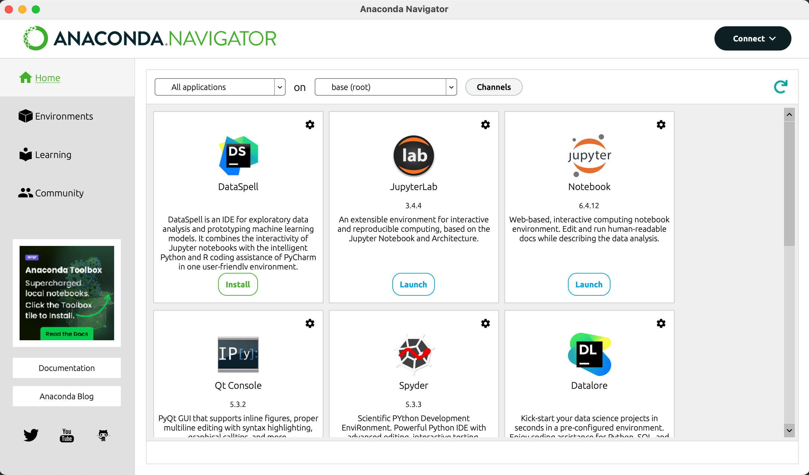
Now we start by creating the environment. Click on “Environments” on the left and then on the “create” button on the bottom:
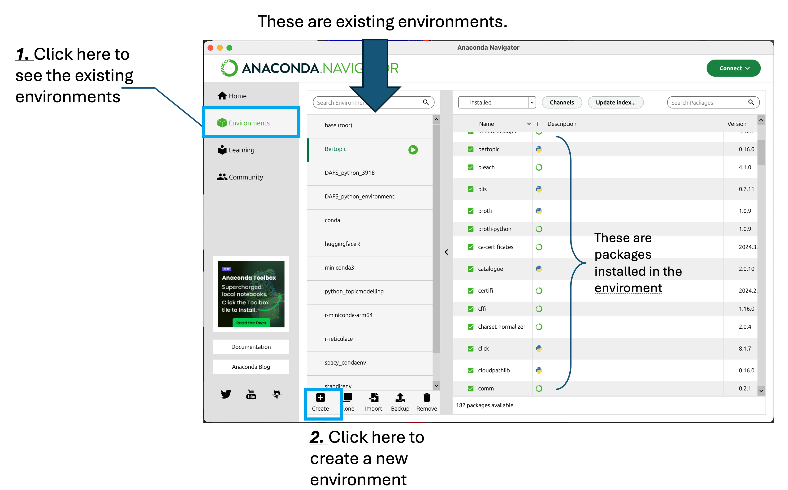
In this window, all the existing environments are listed. As you can see in this image I already have a multitude of environments. Each environment was created for specific projects or tools I wanted to test without risking creating conflicts with other projects. On the right there is a list with packages that allows you to check what is installed in each environment.
Once you click on the “create” button, you will be prompted to provide some information. First you will have to fill in a name, this is the name that will appear in the list. Second you will need to pick a version of python to use. Any version between 3.9.19 and 3.12.2 should work (I have not tested the previous versions). We will proceed with version 3.12.2.
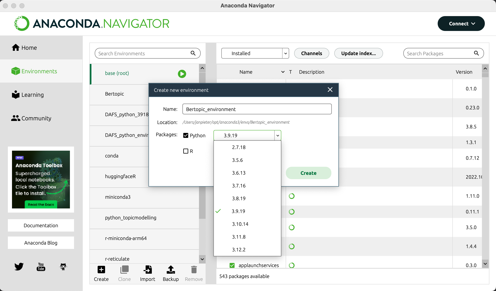
After a while, the window should load and a green play button should appear next to the enviroment you just created. For the purpose of this tutorial I’ve called the environment “test”, it now has the play button next to it meaning it’s now the active environment. The packages on the right are the packages installed by default in the environment.
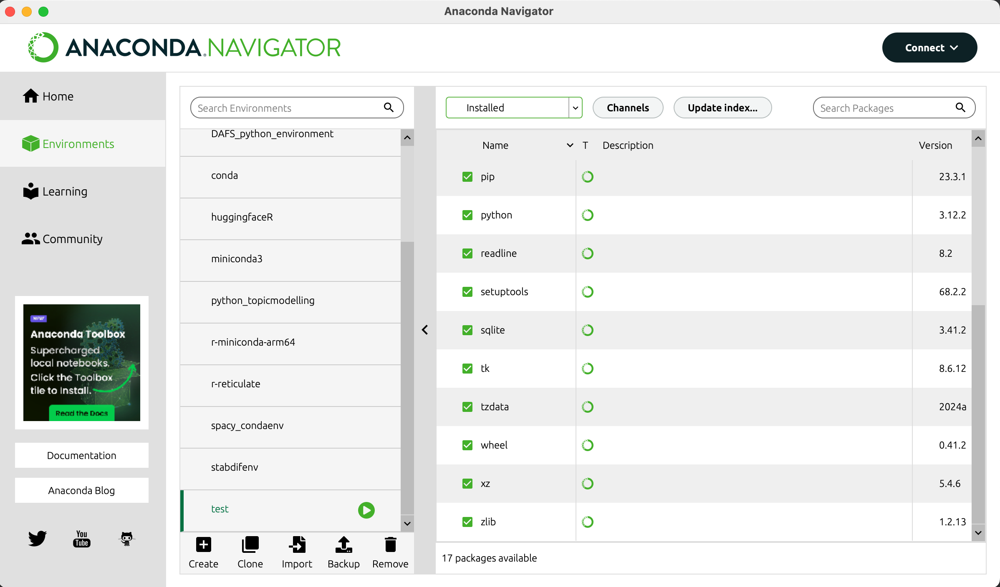
Click on the home button on the top left to go back to the home screen:
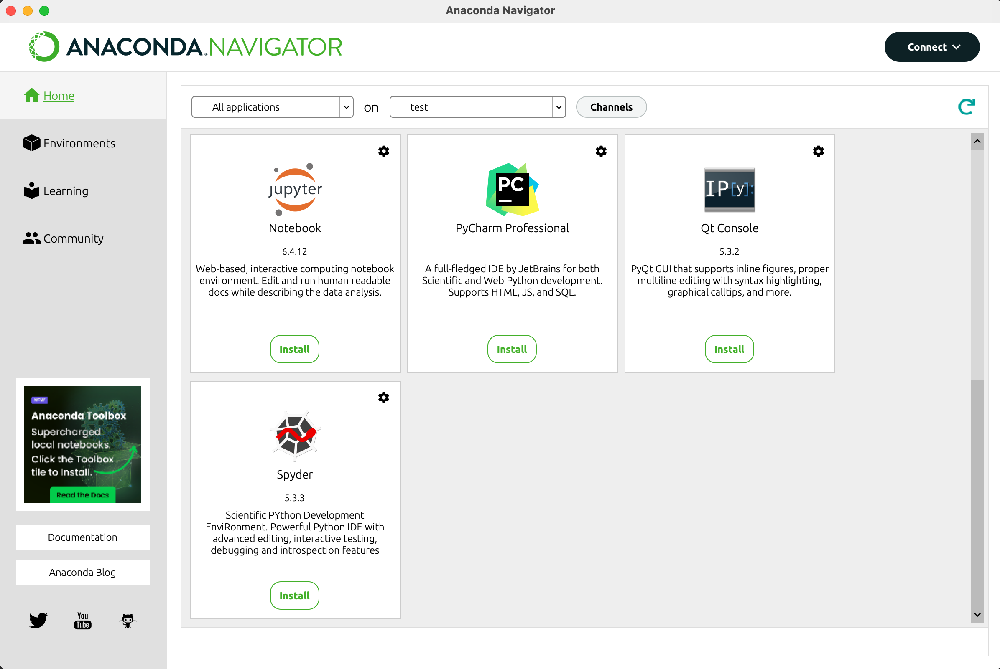
You now have the option to install different interfaces to interact with python. For the puropose of this tutorial we will use jupyter. Click the install button below the logo to install.
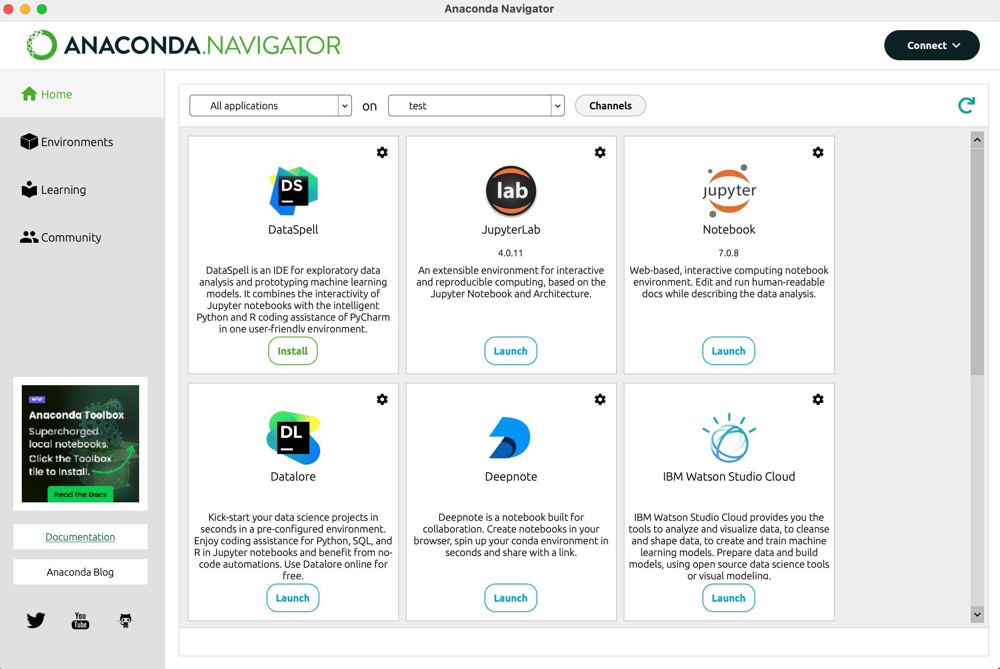
After a while the window should reload and you should now have a “launch” button below jupyter. Jupyter allows you to program in python in your internet browser of choice. This will work even if you’re not connected to the internet.
Setting up Jupyter
It’s now time to install the packages we need to work with BERTopic. In anaconda you will have the choice between different code editors. For the purpose of this tutorial we will use Jupyter. Jupyter is a code editor that opens in your favorite internet browser (it does not require an internet connection to function). To start, click on the “Launch” button below Jupyter as shown below:
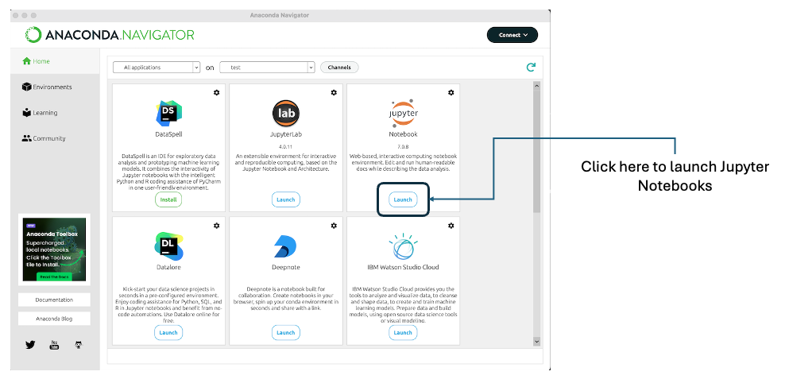
Your navigator should appear with the following page open. On this page we are going to create a new notebook. A notebook is equivalent to a word document, but for programming. You will be able to save all your code in this file.
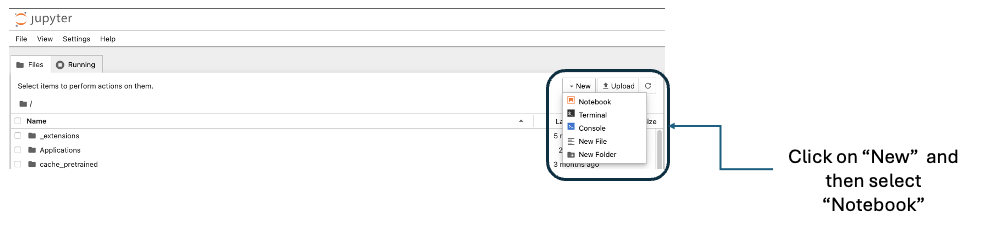
Once you have clicked on “Notebook” you will be prompted to select a Kernel. Different versions of python exist and different applications may require different versions of python. For our purpose 3 works. For other packages you might want to use this might be different. Always check the version required for the packages you are going to use.
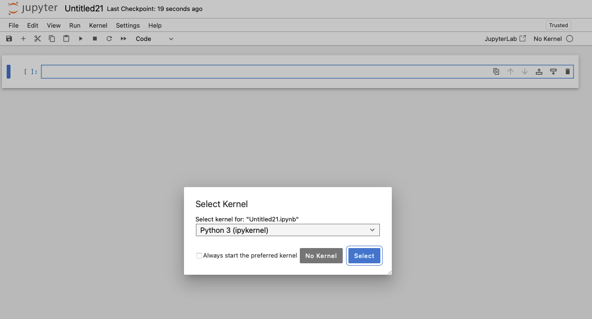
Once you’ve selected this (or if you have already done this in the past) you will have the option to create directly a new notebook with this kernel:
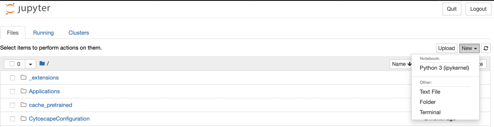
This will open your first notebook. The first action we will take is change the name of the notebook. This can be done by clicking on “untitled1” next to the Jupyter logo on the top left of the page as shown below. You will then be prompted to provide a new name. Let’s give it the name “Bertopic_Tutorial”.
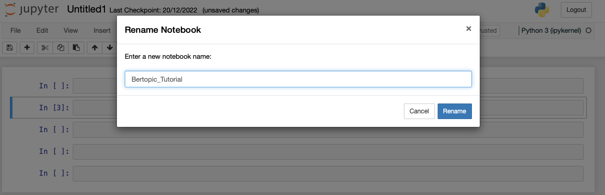
Some basics on the strucute. Jupyter functions with blocks that you can execute one by one. This makes trouble shooting easier. The numbers next to the blocks show the order in which you ran the blocks. If there is no number the block has not yet been run, if there is a star (*) then the block is currently running. Blocks can be easily added and removed as you develop your code. Note that adding comments can be done by starting a line with a #.
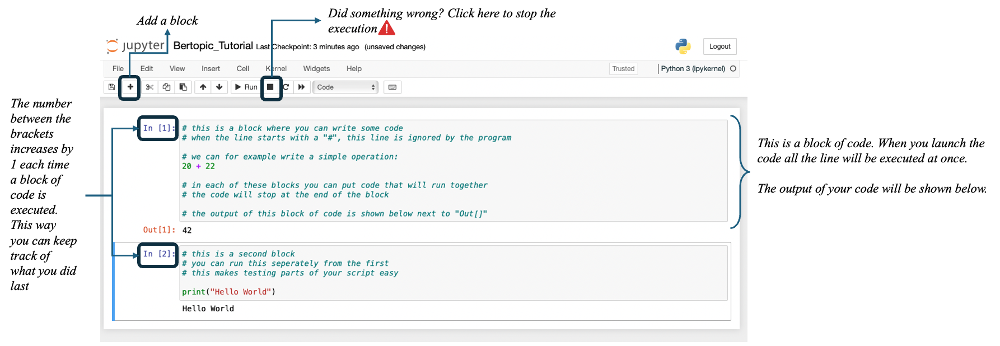
Installing microsoft visual C++ build tools
Download and install C++ visual build tools:
https://visualstudio.microsoft.com/visual-cpp-build-tools/
Installing Bertopic
To use Bertopic we need a certain number of packages. We will first install the basic requirements. The installation of packages in Python is done with the pip command. Note that since we use anaconda, in a specific environment, the packages will be installed in this environment and hence will not be accessible from other environments. This has as a consequence that we sometimes have to install the same package multiple times in different environments.
To install bertopic in our environment use pip as shown below, between brackets you should see the * appear indicating that the code is running, and slowly you will see the different steps appearing underneath the code block:
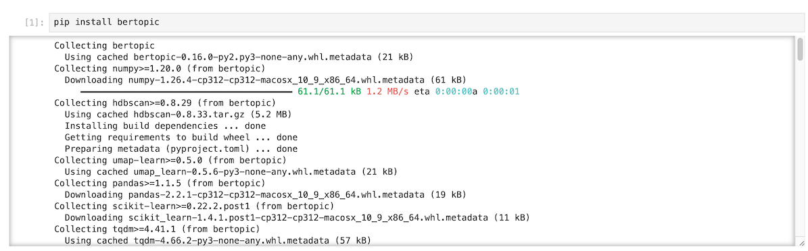
Once all the packages are installed we reload the kernel so that everything will be available for use. Click on the circular arrow in the menu:
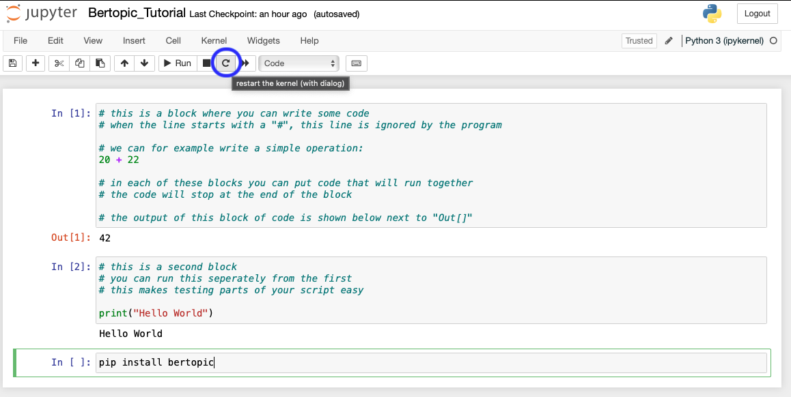
We should now be good to go!
Using BERTopic
We start by loading required packages
```{r, eval = FALSE}
#| eval: false #
import pandas as pd
from bertopic import BERTopic
```Once the packages have loaded correctly we need to import some data. For the purpose of this tutorial we will import a csv file. But you can technically import any data format that contains text. In the following line, replace the name of the file with yours. For simplicity, the data is stored at the root where python in running. For windows users this is the folder that has the same name as your login user name.
```{r, eval = FALSE}
#| eval: false #
data = pd.read_csv("CE_abstracts_text_lemm_prepped.csv", sep = ";")
```The input data for bertopic needs to have a specific format: it need to be a list. We therefore transform our dataframe into a list:
```{r, eval = FALSE}
#| eval: false #
data = data[['abstract']] # we first select only the column with the text
data = data.apply(lambda row: ' '.join(row.values.astype(str)),axis=1).tolist() # transform the df into a list
```Now that the data is in the right format we start with the setting of the parameters of the model. First up are the embeddings we want to use for the data. Embeddings in text mining are representations of words or phrases in a numerical form. These numerical representations capture the semantic meaning of the words or phrases, allowing machines to understand and process text more effectively. Think of embeddings as a way to convert words into vectors of numbers, where similar words are represented by similar vectors. This enables algorithms to analyze, compare, and make predictions based on the meaning of the text rather than just the raw text itself. There are multiple ways to do this, some embeddings have specific purposes (models for patents for instance), others are more general, some focus on one language, others on multiple. In the following image from Bandyopadhyay et al. 2022 some words are positionned in space. The closer the words, the more proximity between them. What we download are basically the coordinates of the words in this space and replace each word with it’s coordinates. Doing this allows us to take into account the distance between the words rather than considering each word at the same distance from each other word.
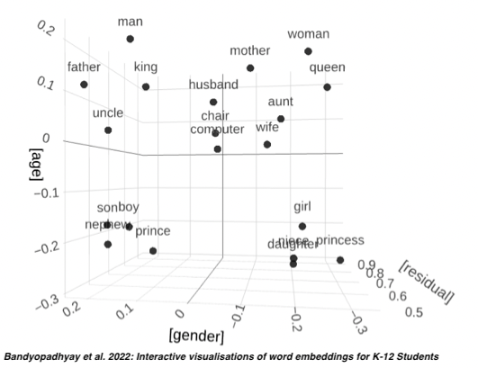
For this tutorial we pick a small, low-weight embedding model to not waste too much time on computation. Other models are available, check Hugging Face for inspiration.
```{r, eval = FALSE}
#| eval: false #
# 1. Get the embeddings
from sentence_transformers import SentenceTransformer
embed_model = SentenceTransformer("all-MiniLM-L6-V2")
```These embedding have a very high dimensionality. The high-dimensional embeddings can be quite complex and computationally expensive to cluster directly. UMAP helps by reducing the dimensionality of these embeddings. It maps the data into a lower-dimensional space (typically 2D or 3D for visualization purposes, but higher dimensions can be used for clustering), aiming to maintain the original data’s essential structure. Our data is usually of a lower dimension than that of the model. We therefore use a technique to reduce the dimension of the data. The Uniform Manifold Approximation and Projection (UMAP) technique is used for this.
For example, we can represent our words in a three dimensional space based on our embeddings. This would look something like this:
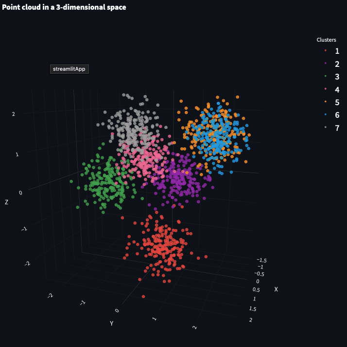
The UMAP algorithm reduced the dimension of this data so that clustering algorithms can more efficiently identify clusters:
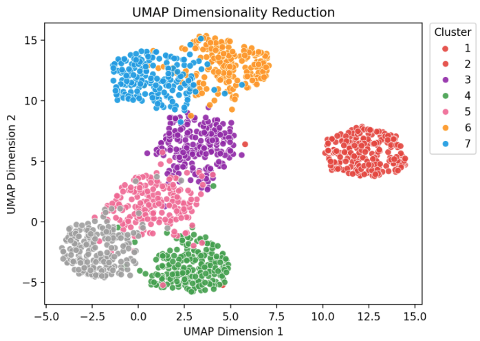
These images come from this webiste where you can interact with this data.
This dimensionality reduction relies on different parameters that heavily influence the output, for a full explanation on this topic see this webiste . There are many more, but here we focus on the main ones:
| Parameter | Explanation |
|---|---|
| n_neighbors | A larger value for n_neighbors encourages UMAP to take a broader view of the data structure, making it more focused on preserving the global data structure. Conversely, a smaller value makes UMAP focus more on local data structures. |
| n_components | This specifies the number of dimensions to which the data should be reduced. For example, n_components = 5 means that UMAP will reduce the data to 5 dimensions. This is useful when you want to reduce dimensionality but retain more structure in multiple dimensions, which can be important for clustering algorithms that follow the dimensionality reduction |
| min_dist | This parameter controls how tightly UMAP is allowed to pack points together, which influences how much the data points in the low-dimensional representation can cluster together. Setting min_dist to 0.0 allows points to be packed together as closely as possible, leading to clumpier embeddings. This might be useful in highlighting local clusters at the expense of possibly losing some broader structure. |
| metric | The distance metric used to measure the similarity between points in the high-dimensional space. |
```{r, eval = FALSE}
#| eval: false #
# 2. Reduce the dimensions of the embeddings
from umap import UMAP
umap_model = UMAP(n_neighbors = 30, n_components = 5, min_dist = 0.0, metric = "cosine", random_state = 42)
```Once we have reduced the dimensions of the data, we need to cluster the terms together into topics. For this purpose the HDBSCAN algorithm is used.
| Parameter | Explanation |
|---|---|
| min_cluster_size | the minimum size of clusters that HDBSCAN will consider valid |
| metric | This is the distance metric used to measure the similarity or distance between points in the feature space |
| cluster_selection_method | This parameter determines how clusters are selected from the hierarchical tree generated during the clustering process. The ‘eom’ method focuses on finding clusters that persist over a significant range of cluster stability (i.e., clusters that have a lot of “excess of mass”). This tends to result in selecting larger, more prominent clusters and is generally more robust to noise. The alternative is ‘leaf’, which would consider all possible clusters at the leaves of the tree, often resulting in a larger number of smaller clusters. |
| prediction_data | When set to True, this parameter instructs HDBSCAN to generate additional data about the cluster hierarchy and the soft clustering assignments, which can be used for predicting the cluster memberships of new, unseen data. This is particularly useful if you intend to use the clustering model as part of a production pipeline where new documents need to be automatically assigned to the existing clusters/topics identified during the initial clustering. |
```{r, eval = FALSE}
#| eval: false #
# 3. Control for the number of topics
from hdbscan import HDBSCAN
hdbscan_model = HDBSCAN(min_cluster_size = 7, metric = "euclidean", cluster_selection_method = 'eom', prediction_data = True)
``````{r, eval = FALSE}
#| eval: false #
# 4. prep the text
from sklearn.feature_extraction.text import CountVectorizer
vect_model = CountVectorizer(stop_words = "english", min_df = 2, ngram_range = (1,1))
``````{r, eval = FALSE}
#| eval: false #
# 5. representation
from bertopic.representation import KeyBERTInspired, MaximalMarginalRelevance, PartOfSpeech
import spacy
keybert_model = KeyBERTInspired()
mmr_model = MaximalMarginalRelevance(diversity = 0.3)
``````{r, eval = FALSE}
#| eval: false #
representation_model = {
"keyBERT": keybert_model,
"MMR": mmr_model,
# "POS": pos_model
}
```# 5. compute the topics and the probabilities
topic_model = BERTopic(
embedding_model = embed_model,
umap_model = umap_model,
hdbscan_model = hdbscan_model,
vectorizer_model = vect_model,
representation_model = representation_model,
top_n_words = 20,
verbose = True
)
#topics, probs = topic_model_scopus.fit_transform(data_scopus, embeddings)
topic_model.fit(data)hier_topics = topic_model_scopus.hierarchical_topics(data_keep)
topic_model_scopus.visualize_hierarchical_documents(data_keep, hier_topics)topic_model_scopus.visualize_hierarchy(hierarchical_topics=hier_topics)# Assuming `documents` is your list of documents and you have already fitted a BERTopic model:
# topic_model = BERTopic().fit(documents)
# Retrieve all the unique topics (excluding -1 which usually stands for outliers/noise)
topics = sorted(list(topic_model_scopus.get_topics().keys()))
# Initialize a list to hold your data
data2 = []
# Iterate over each topic to get the top 20 words and their scores
for topic in topics:
if topic == -1: # Optionally skip the outliers topic
continue
words, scores = zip(*topic_model_scopus.get_topic(topic))
# Append to your data list
for word, score in zip(words, scores):
data2.append({"Topic": topic, "Word": word, "Score": score})
# Create a DataFrame from your data
topic_words_df = pd.DataFrame(data2)
# Now `topic_words_df` contains the top 20 words per topic along with their scores
print(topic_words_df)
# If you want to save this to a CSV file
topic_words_df.to_csv("top_words_per_topic_crunchbase.csv", index=False)topic_model_scopus.visualize_barchart(topics=[1,2,3,4,5,6,7,8])plop = topic_model_scopus.get_document_info(data_keep)
plop.to_csv('CE_topics.csv', index=False)topic_distr, _ = topic_model.approximate_distribution(docs)
topic_model.visualize_distribution(topic_distr[1])topic_model.visualize_heatmap()